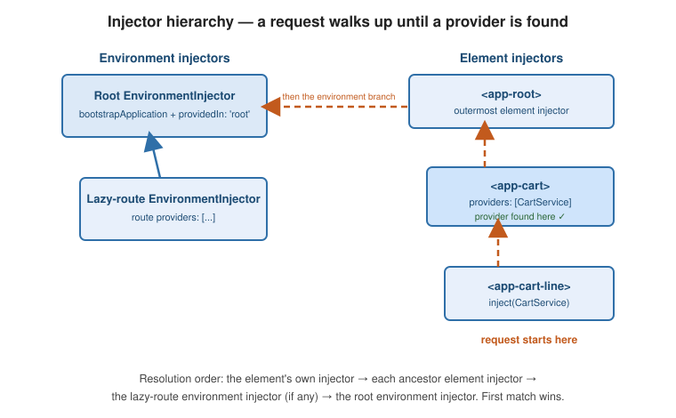

Dependency Injection
|
This content was generated with the assistance of AI and should be verified against the official documentation before being relied on in production. |
Dependency injection (DI) is how an Angular class asks for the objects it needs instead of constructing them. A tree of injectors resolves each request, so services are shared, swappable, and easy to fake in tests.
Services and providedIn: 'root'
A service is a plain class marked with @Injectable. Setting providedIn: 'root' registers it with the
application’s root injector, making it a singleton that any component or other service can inject, and letting
the bundler tree-shake it away when nothing uses it.
import { Injectable, inject } from '@angular/core';
import { HttpClient } from '@angular/common/http';
@Injectable({ providedIn: 'root' })
export class BookService {
private readonly http = inject(HttpClient);
list() {
return this.http.get<Book[]>('/api/books');
}
}Consume it by injecting the class token:
import { Component, inject } from '@angular/core';
@Component({
selector: 'app-book-list',
template: `@for (book of books(); track book.id) { <li>{{ book.title }}</li> }`,
})
export class BookList {
private readonly service = inject(BookService);
readonly books = toSignal(this.service.list(), { initialValue: [] as Book[] });
}The current CLI generates a shorter equivalent with ng generate service book (see The @Service decorator); pass
--injectable to get the @Injectable({ providedIn: 'root' }) form shown above. See
Dependency injection and
Creating and using services.
The @Service decorator
@Service() is a decorator in @angular/core for a class that is provided in the root injector automatically. It is what
ng generate service emits in the current release, and it behaves like @Injectable({ providedIn: 'root' }): a lazily
created, tree-shakable singleton.
import { Service, inject, signal } from '@angular/core';
@Service()
export class Selection {
readonly current = signal<string | null>(null);
}
// Not provided automatically: you list it in a providers array yourself, e.g. per component.
@Service({ autoProvided: false })
export class DialogState {}
// A service whose value comes from a factory.
@Service({ factory: () => ({ rate: 1.21 }) })
export class Tax {}autoProvided: false makes the class injectable only where you register it (a component’s providers, a route’s
providers, a test), which is the right choice for state that must not be shared. The factory form is the shorthand for
a service built by a function rather than by new. @Injectable is not deprecated; the rest of this page uses it
because every supported release accepts it.
inject() versus constructor injection
Both forms retrieve the same instance from the same injector. inject() is a function call in a field
initializer; constructor injection uses a typed parameter with an implicit @Inject for the type.
import { Injectable, inject } from '@angular/core';
// preferred: inject() in a field
@Injectable({ providedIn: 'root' })
export class ReportService {
private readonly http = inject(HttpClient);
private readonly books = inject(BookService);
}
// equivalent: constructor parameters
@Injectable({ providedIn: 'root' })
export class LegacyReportService {
constructor(
private readonly http: HttpClient,
private readonly books: BookService,
) {}
}inject() composes better: it works inside base classes without threading constructor parameters through
subclasses, it needs no constructor at all, and it gives functions (functional guards, interceptors,
resolvers) access to DI. It only works within an injection context.
The injection context
inject() may be called only while Angular is executing constructor-time code: class field initializers and
constructors of injectables, factory functions passed to useFactory or InjectionToken, and the callbacks
of runInInjectionContext. Calling it later — for example inside an event handler or a setTimeout — throws
NG0203.
To reach DI outside that window, capture an Injector (or an EnvironmentInjector) while you still have a
context and re-enter it with runInInjectionContext:
import { Component, EnvironmentInjector, inject, runInInjectionContext } from '@angular/core';
@Component({ selector: 'app-widget', template: '' })
export class Widget {
private readonly injector = inject(EnvironmentInjector);
onClick() {
runInInjectionContext(this.injector, () => {
const books = inject(BookService); // now valid
books.list();
});
}
}Provider recipes
A provider tells an injector how to produce the value for a token. providedIn uses the class itself as
both token and recipe; an explicit providers entry can decouple the two.
import { InjectionToken } from '@angular/core';
export interface AppConfig {
apiUrl: string;
pageSize: number;
}
export const APP_CONFIG = new InjectionToken<AppConfig>('APP_CONFIG');
export const providers = [
// useClass: satisfy a token with a (possibly different) class
{ provide: BookService, useClass: FakeBookService },
// useValue: a ready-made constant (config, tokens, test doubles)
{ provide: APP_CONFIG, useValue: { apiUrl: '/api', pageSize: 20 } },
// useFactory: compute the value, optionally from other dependencies
{
provide: 'BOOKS_ENDPOINT',
useFactory: (cfg: AppConfig) => `${cfg.apiUrl}/books`,
deps: [APP_CONFIG],
},
// useExisting: an alias -- return the instance already registered for another token
{ provide: LoggerApi, useExisting: ConsoleLogger },
// multi: contribute one entry to an array token instead of replacing it
{ provide: VALIDATORS, useClass: LengthValidator, multi: true },
{ provide: VALIDATORS, useClass: PatternValidator, multi: true },
];Inject a non-class token with inject(TOKEN):
const config = inject(APP_CONFIG); // typed as AppConfig
const validators = inject(VALIDATORS); // typed as Validator[] because of multiInjectionToken gives a type-safe key for values that have no class to name them (configuration objects,
strings, feature flags). Provide a factory in its options to make it tree-shakable and root-scoped by
default. See Configuring dependency providers.
Hierarchical injectors
Injectors form a tree with two parallel branches. Angular resolves a token by walking up from the injector
where the request originates until it finds a provider, then throws NG0201 if it reaches the root without a
match.
-
Environment injectors — the root injector created by
bootstrapApplication, plus a child for every lazy route that declaresproviders. Services withprovidedIn: 'root'and everything inApplicationConfiglive here. -
Element injectors — one per component/directive host element, configured by the component’s
providersandviewProvidersmetadata. A child element injector delegates to its parent element injector, and the outermost element injector delegates to the environment injector.
import { Component } from '@angular/core';
@Component({
selector: 'app-cart',
providers: [CartService], // a fresh CartService for this component and its whole subtree
viewProviders: [PricingService], // visible to this component's view, but NOT to projected <ng-content>
template: `<app-cart-line />`,
})
export class Cart {}Component-level providers create a new instance scoped to that component instance and its descendants — useful for per-feature or per-dialog state. viewProviders is the same but hides the provider from content
projected into the component.
Resolution modifiers
Parameter decorators change how far the lookup walks:
import { Component, Host, Optional, Self, SkipSelf, inject } from '@angular/core';
@Component({ selector: 'app-cart-line', template: '' })
export class CartLine {
// inject() equivalents take an options object
private readonly own = inject(CartService, { self: true }); // only this element injector
private readonly parent = inject(CartService, { skipSelf: true }); // start at the parent
private readonly maybe = inject(PricingService, { optional: true }); // null instead of throwing
private readonly host = inject(CartService, { host: true }); // stop at the host component
// decorator form (constructor injection)
constructor(@Optional() @Self() svc: CartService | null) {}
}@Self / { self: true } restricts the search to the current injector; @SkipSelf starts one level up;
@Host stops at the host component’s element injector; @Optional / { optional: true } yields null
rather than an error when nothing is found.
Lazy-loaded routes get their own environment injector, so providers on a lazy route (or via
providers in a route config) are singletons for that lazily loaded area only — a practical way to scope a
service to a feature without making it global. See
Hierarchical injectors.
How a request is resolved
Providers are lazy: nothing is constructed until the first inject() of a token, and then exactly one instance exists
per injector that owns the provider. A root service injected twice yields the same object, and a service listed in a
component’s providers yields one object per instance of that component.
The injector tree

A request raised in a deeply nested component checks that component’s element injector, then each ancestor element injector, then the environment injector of its lazy route (if any), and finally the root environment injector — taking the first provider it meets.
Deep dive: scoping BookShelf’s services
A cart panel needs a service whose state belongs to one panel, not to the whole application. Listing the service in the
component’s providers gives every <app-cart> its own instance, and viewProviders keeps a second service private to
the panel’s own template:
@Injectable()
export class CartService { readonly items = signal<string[]>([]); }
@Injectable()
export class PricingService { readonly rate = 1.21; }
@Component({
selector: 'app-cart-line',
template: `{{ own ? 'own' : 'no-own' }}|{{ parent ? 'parent' : 'no-parent' }}|{{ pricing ? 'pricing' : 'no-pricing' }}`,
})
export class CartLine {
protected readonly own = inject(CartService, { self: true, optional: true });
protected readonly parent = inject(CartService, { skipSelf: true, optional: true });
protected readonly pricing = inject(PricingService, { optional: true });
}
@Component({
selector: 'app-cart',
imports: [CartLine],
providers: [CartService],
viewProviders: [PricingService],
template: `<app-cart-line /><ng-content />`,
})
export class Cart {}
@Component({
selector: 'app-page',
imports: [Cart, CartLine],
template: `<app-cart /><app-cart /><app-cart><app-cart-line /></app-cart>`,
})
export class Page {}Rendering Page produces four CartLine outputs. The three lines declared in each cart’s own template print
no-own|parent|pricing: they have no provider of their own, they find the cart’s CartService one level up, and they can see
PricingService because it is a view provider of the cart. The fourth line was written by Page and projected through
<ng-content>: it prints no-own|parent|no-pricing. It still resolves CartService (a normal providers entry is visible
to projected content) but PricingService is hidden from it, because viewProviders is visible only to the component’s own
view. Each of the three carts also owns a separate CartService instance, so adding an item to one does not touch the others.
Provider recipes in action
const APP_CONFIG = new InjectionToken<AppConfig>('APP_CONFIG');
const ENDPOINT = new InjectionToken<string>('ENDPOINT');
const VALIDATORS = new InjectionToken<string[]>('VALIDATORS');
const BASE = new InjectionToken<string>('BASE', { providedIn: 'root', factory: () => '/default' });
TestBed.configureTestingModule({
providers: [
{ provide: APP_CONFIG, useValue: { apiUrl: '/api', pageSize: 20 } },
{ provide: ENDPOINT, useFactory: (cfg: AppConfig) => `${cfg.apiUrl}/books`, deps: [APP_CONFIG] },
{ provide: LoggerApi, useExisting: ConsoleLogger },
{ provide: VALIDATORS, useValue: 'length', multi: true },
{ provide: VALIDATORS, useValue: 'pattern', multi: true },
],
});
TestBed.inject(ENDPOINT); // '/api/books'
TestBed.inject(LoggerApi) === TestBed.inject(ConsoleLogger); // true: useExisting is an alias, not a copy
TestBed.inject(VALIDATORS); // ['length', 'pattern'] in registration order
TestBed.inject(BASE); // '/default': the token's own factoryThe error messages you will meet
Asking for a token nobody provides, or calling inject() outside an injection context, fails with these messages:
NG0201: No provider found for `InjectionToken APP_CONFIG`.
NG0203: The `_Counter` token injection failed. `inject()` function must be called from an injection context such as a
constructor, a factory function, a field initializer, or a function used with `runInInjectionContext`.A frequent cause is an inject() call inside a method that runs later, such as
refresh() in a service that is invoked from an RxJS operator: move the inject() to a field initializer
(private readonly http = inject(HttpClient);) and use the field in the method.
Lifetimes, cleanup, and initialisation
A service that implements ngOnDestroy is cleaned up when the injector that owns it is destroyed: a component’s
providers when the component is destroyed, a route’s providers when the lazy-loaded route’s injector is, and the root
services when the application is. You can create and destroy an injector yourself:
import { EnvironmentInjector, Injectable, OnDestroy, createEnvironmentInjector, inject } from '@angular/core';
@Injectable()
class Closable implements OnDestroy {
ngOnDestroy(): void { console.log('closed'); }
}
const parent = inject(EnvironmentInjector);
const child = createEnvironmentInjector([Closable], parent);
child.get(Closable); // created on first request
child.destroy(); // prints "closed"Two hooks let a provider run code while the injector is being built. provideEnvironmentInitializer(() => ...) runs
synchronously when an environment injector is created (use it to register things or to read configuration).
provideAppInitializer(async () => ...) may return a promise, and Angular waits for it before it creates the root
component, so it suits loading remote configuration — and any slow work in it delays the first paint:
bootstrapApplication(App, {
providers: [
provideAppInitializer(async () => {
const cfg = await fetch('/config.json').then((r) => r.json());
inject(ConfigStore).set(cfg); // inject() is valid here: the callback runs in an injection context
}),
],
});To defer loading the code of a service, injectAsync() (new in the current release) takes a dynamic import and returns a
function that resolves the instance when first called. The service has to be auto-provided (@Service() or
providedIn: 'root'):
export class Exporter {
private readonly pdf = injectAsync(() => import('./pdf-service').then((m) => m.PdfService));
async onExport(): Promise<void> {
(await this.pdf()).render(); // the pdf-service chunk downloads on first use
}
}Substituting providers in tests
Because every dependency is resolved through an injector, a test replaces one by registering a different provider for the same token; no mocking library is needed:
TestBed.configureTestingModule({
providers: [{ provide: BookStore, useValue: { books: signal([]), count: signal(0), total: signal(0), remove() {} } }],
});